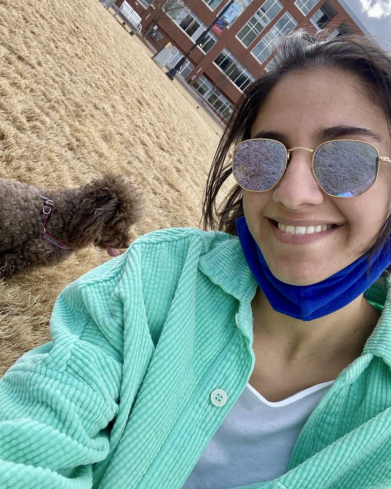
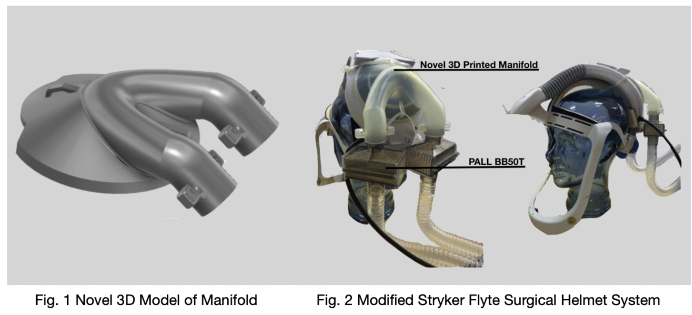
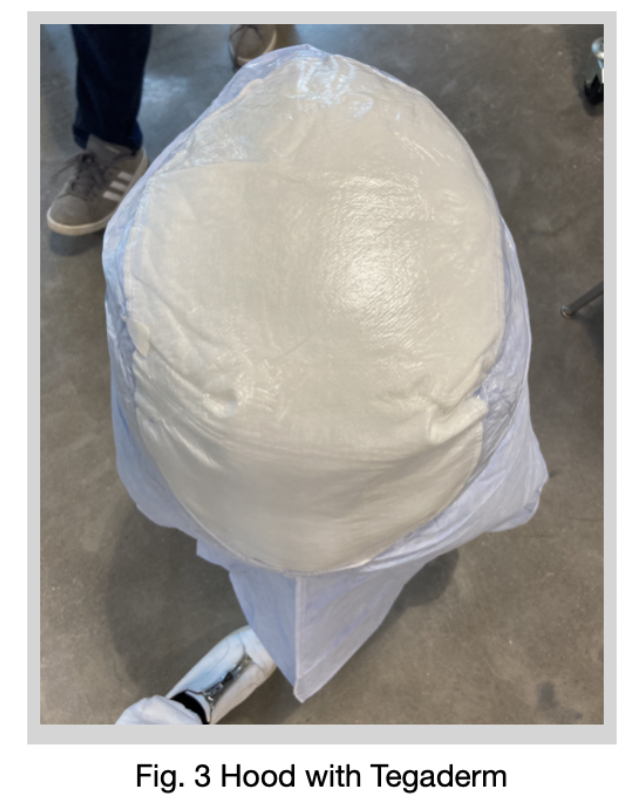
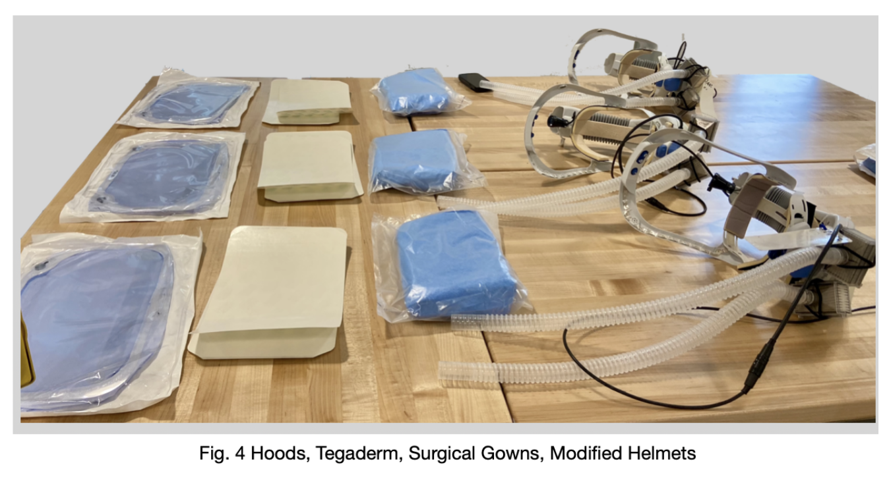
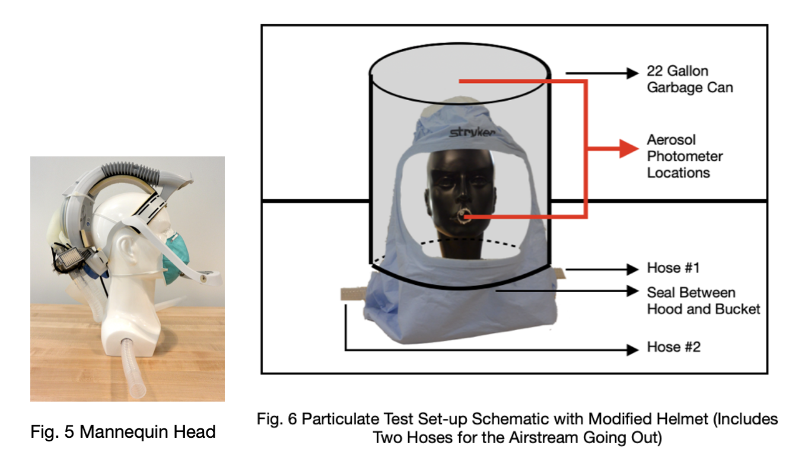
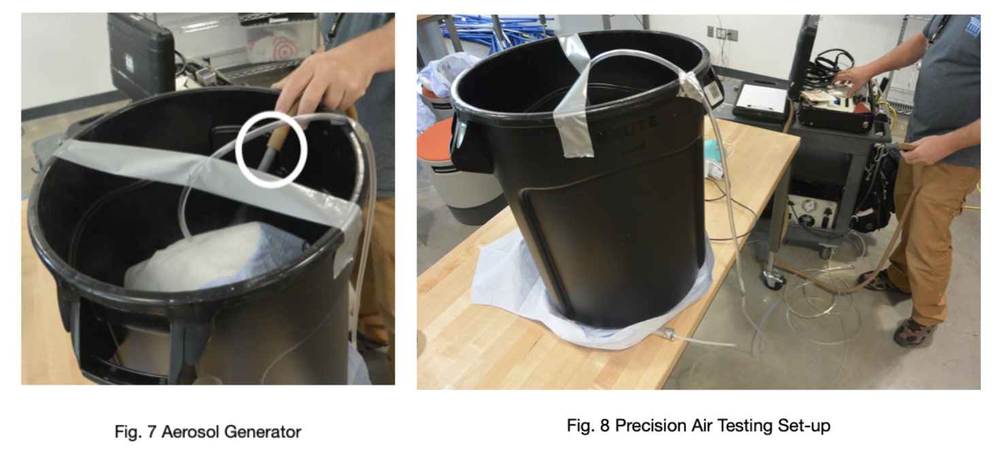
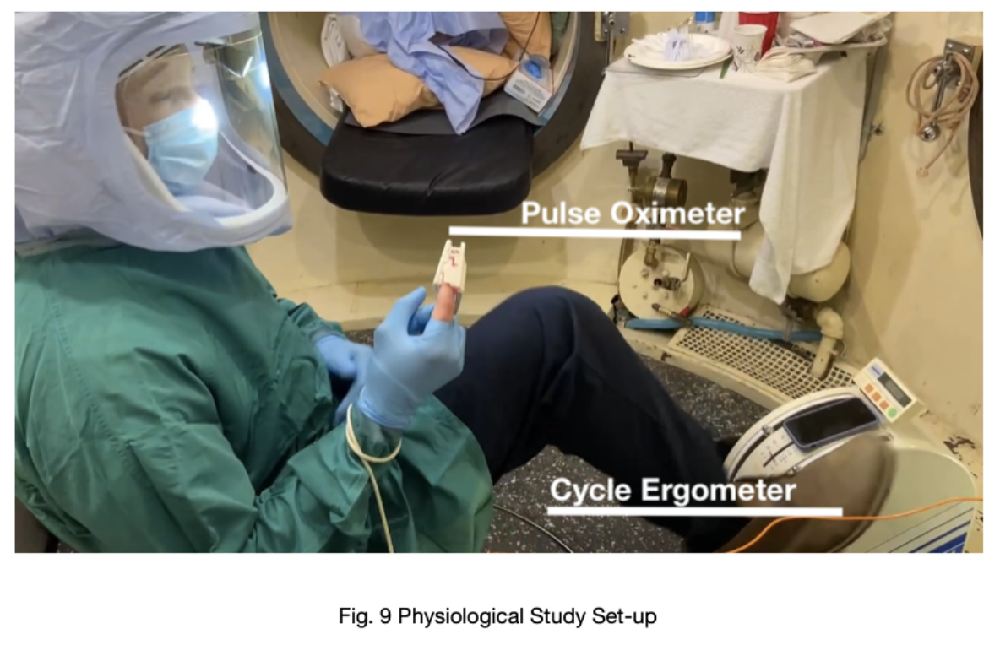
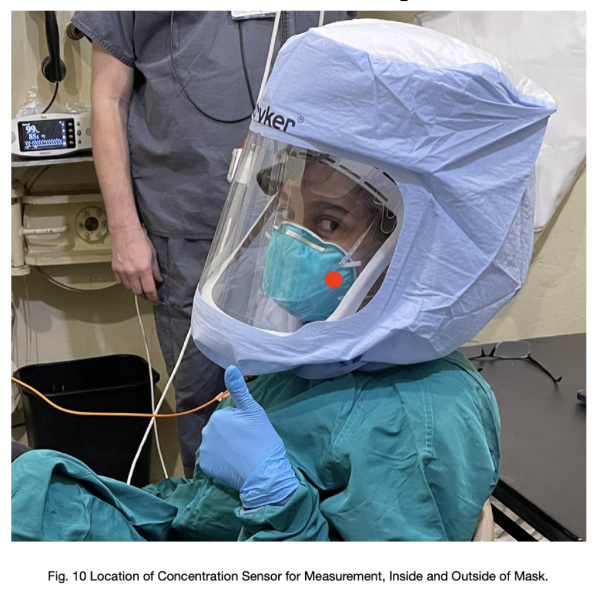

About

Inspired to design and develop accessible and sustainable medical devices, especially for women in low-income countries...
I was born and raised in Lima, Peru.
Moved to the US in 2017, where I completed my BSE in biomedical engineering - Arizona State University, May 2020
Completed my MENG in biomedical engineering, and my certification in medical device design - Duke University, December 2021
A special thank you to my family for all of their support and for making all of this possible :)
Projects and Experiences:
Calla Health Foundation - Junior Engineer, 2022
Center for Global Women's Health Technologies Collaboration - Duke University, 2022
Calla Health Foundation - Intern, 2021
Designed portable testing platform for quality testing of device specifications


Research Assistant - Eric S. Richardson Ph.D., 2020-2021
Design of validation tests for orthopedic surgical helmet manifold efficacy under COVID-19 pandemic, by designing, conducting, participating in trial and as an author of the paper for the Journal of Arthroplasty







Center for Global Women's Health Technologies - Duke University, 2021
My Work: Optimization of HSP90 Staining Platform for Cervical Biopsy Screening
Current State of Technology:

Needs to Address:
1. Integrity of biopsy specimen maintained
2. Can be transported by clinician
3. System can be implemented in Low-to-Middle-Income Contries
4. Battery power as a power source
5. Insulation of wiring between microcontroller, circuits and pumps

Addressed Needs:
1. Created compact set up to fit required subcomponents for use, become portable, and optimize process workflow
2. Developed mechanism to be able to flip sample 180º to mantain specimen integrity
3. Implemented of mechanism to regulate height of scope for proper visualization of sample at the desired working distances for scope
4. Added a horizontal mobility feature to the scope to expand the field of visualization